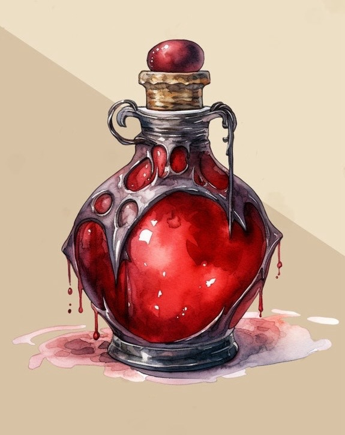
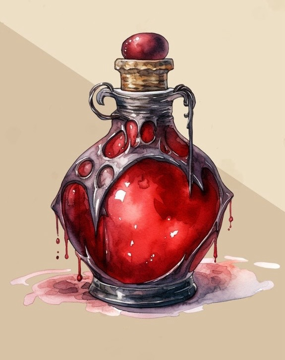
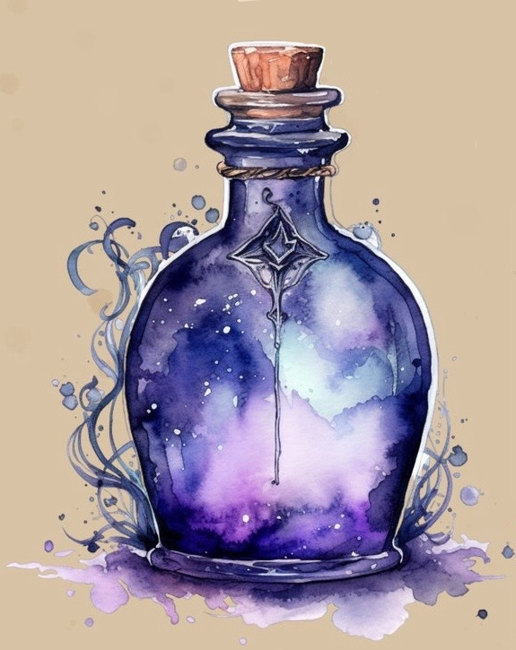
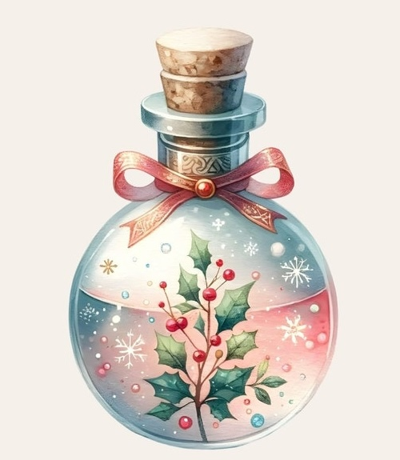
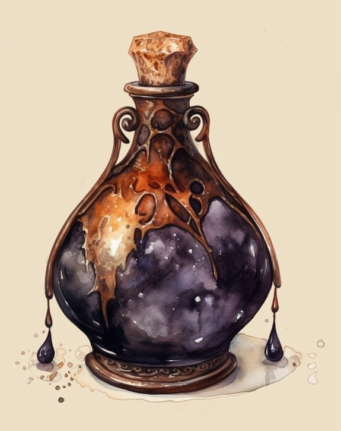
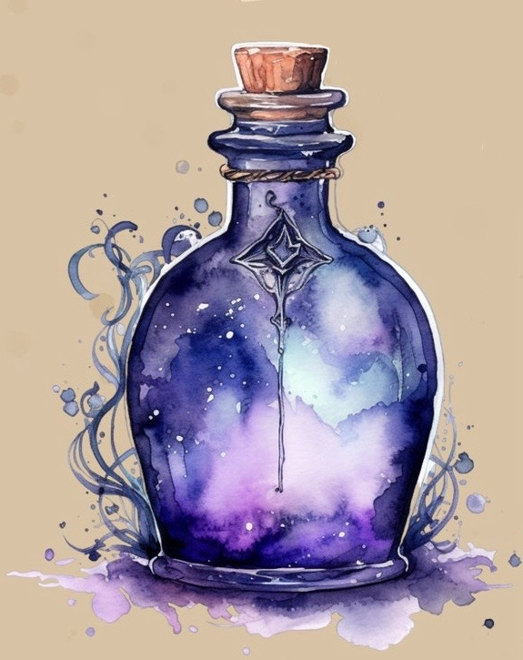
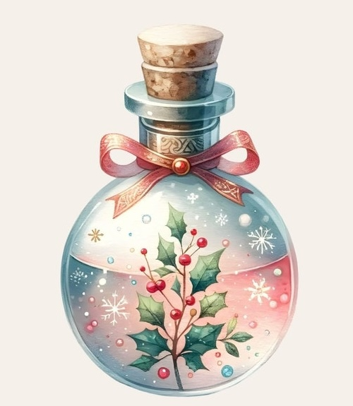
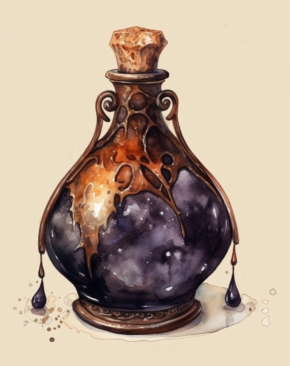

Pre-Made Potions

Browse our collection of pre-made potions, each crafted with unique magical properties and enchanting colors.
Brewing Magic and Enchantment, One Potion at a Time


 

 







Step into a realm where enchantment meets creativity! At Mystic Brews, we bring the world of magic to life with a dazzling array of potions and interactive features. Explore our collection of pre-made potions, each crafted to deliver unique magical effects—from courage and luck to love and tranquility. Feeling festive? Don't miss our limited-time holiday promotions, featuring exclusive potions like the Holly-Jolly Potion and Winter’s Calm Elixir.
Want to unleash your inner alchemist? Dive into our "Brew Your Potion" section, where you can combine mystical ingredients to create your own spellbinding concoction. From magic lovers to aspiring witches and wizards, Mystic Brews offers something for everyone. Join us in a journey of wonder, discovery, and a little bit of magic!
Browse our collection of pre-made potions, each crafted with unique magical properties and enchanting colors.

Celebrate the holidays with our exclusive festive potions, including the Holly-Jolly Potion and Winter’s Calm Elixir.
Combine mystical ingredients in our interactive potion maker to craft your very own spellbinding concoction.
Discover which Caltech house matches your personality or mood with our fun, interactive quiz based on potions you choose!
Need help or have inquiries? Reach out to our enchanted customer service team for assistance.